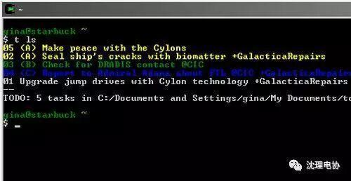

如何自学编程

首要之首：不要急于选择一种语言
新手们有一个常见的错误就是犹豫于判断哪种编程语言是做好的、最该先学的。 我们有很多的选择，但你不能说那种语言最好。 我们应该理解：说到底，什么语言并不重要。 重要的是理解数据结构、控制逻辑和设计模式。任何一种语言甚至一种简单的脚本语言都会具有所有编程语言都共有的各种特征，也就是说各种语言是贯通的。 编程使用Pascal，汇编，和C语言，事实上我从来没有把它当成职业以求获得回报。 不要急于选择何种编程语言。 找出你想要开发的东西，使用一种能够完成这项任务的语言，这就可以了。
根据各种开发平台的不同，有很多不同的软件开发形式可供你选择：从网站应用到桌面软件到智能手机软件到命令行脚本工具。 这篇文章里，将重点介绍一些很受欢迎的入门教程和资源，它们能帮助你学会如何在各种主流的平台上编程开发。 我先假设你是一个悟性很强的读者，但对于新手，当我谈论程序代码时还是要按照入门级的水平。 因为即使是你自己看一篇编程入门 手册，如果发现都能理解时，心情自然会很高兴，这样利于你进一步学习。
除了把自己约束在特定的编程语言和特定的操作系统上，你还可以在浏览器里开发你的杀手锏程序，让它在互联网上运行，这就是webapp。 欢迎来到奇妙的web编程世界。
HTML 和 CSS：开发网站，你第一件要知道的事情就是HTML(网页就是由它组成的)和CSS(一种让外观更好看的样式标记)。 HTML 和 CSS 并不是编程语言它们只是页面的结构和样式信息。 然而，在开始开发web应用程序之前你必须要学会如何手工的编写简单的HTML和CSS，web页面是任何webapp的前端显示部分。 这个 HTML 指导 是你入手的好地方。
JavaScript:当你可以通过HTML和CSS构建一个静态页面后，事情就开始变得有趣了因为到了该学JavaScript的时候了。 JavaScript是一种web浏览器上的编程语言，它的魔力就是能在页面里制造一些动态效果。 JavaScript可以做bookmarklets, Greasemonkey 脚本, 和 Ajax, 所以它是web上各种好东西的关于因素。 学习JavaScript从这里开。
服务器端脚本：一旦你学会了网页里的知识，你就要开始对它添加一些动态服务器操作为了实现这些，你需要把目光转移到服务器端脚本语言，例如PHP, Python, Perl, 或 Ruby。 举个例子，如果想要制作一个网页形式的联系方式表单，根据用户的输入发送邮件，你就需要使用服务器端脚本来实现。 像PHP这样的脚本语言可以让你跟web服务器上的数据库进行沟通，所以如果你想搭建一个用户可以登录注册的网站，这样的语言正是你需要的。 Webmonkey 是一个优秀的web开发资源网站，里面有大量的各种web编程语言的指导手册。 阅读一下他们的 PHP 初学者指南。 当你感觉差不多了的时候，看看WebMonkeys PHP and MySQL tutorial 学习如何使用PHP跟数据库交互。 网上最好的要数PHP语言官方的在线文档和函数参考了。 每个知识点上 (例如strlen function这个)都在后面列出来用户的评论注释，这些对于文档的本身是非常有价值的。 （我很喜欢PHP，但还有很多其他种服务器端的脚本语言你们都可以选择。)
Web框架：过去数年里，web开发人员在开发动态网站的过程中不得不一遍又一遍的针对重复遇到的问题写出重复的代码。 为了避免这种每次开发一些新网站都会重复劳动一次的问题，一些程序员动手搭建了一些框架，让框架替我们完成重复性的工作。 非常流行的 Ruby on Rails 框架，作为一个例子，它利用Ruby编程语言，为我们提供了一个专门面向web的架构，普通的web应用程序都能使用它来完成。 事实上，Adam使用Rails开发了他的第一个正式的（而且是叹为观止的！）web应用程序，MixTape.me。这就是 他的如何在没有任何经验的情况下搭建一个网站。还有一些其他的web开发框架包括 CakePHP (针对 PHP 编程者), Django (针对 Python 编程中), 以及 jQuery (针对 JavaScript).
Web APIs: API (应用层序编程接口) 是指不同的软件之间相互交换的程序途径。 例如，如果你想在你的网站上放一个动态的地图，你可以使用Google Map，而不需要开发自己的地图。 The Google Maps API 可以轻松的让你通过JavaScript在程序中引入一个地图到你的页面上。 几乎所有的现代的你所知道的和喜爱的web服务都提供了API，通过这些API你可以获取到他们的数据和小工具，在你的应用程序里就可以使用这些交互过来的东西了，例如Twitter, Facebook, Google Docs, Google Maps, 这个列表远不止这些。 通过API把其他web应用集成到你的web应用里是现在富web开发的前沿地带。 每个优秀的主流的web服务API都附带有完整的文档和一些快速入手的指导(例如，这个就是 Twitter的)。 疯狂吧。

很多的在linux平台上运行的web脚本同样能以命令行模式运行，例如Perl，Python和PHP，所以如果你学会了使用它们，你将能在两种环境中使用它们。 我的学习道路一直没离开Peal太远，我自学Python使用的是这本优秀的在线免费书Dive into Python。
如果成为一个Unix高手也是你学习的目标，那么你绝对要精通bash这个脚本语言。 Bash是Unix和Linux环境下的一种命令行脚本语言，它能够为你做所以的事情：从自动备份数据库脚本到功能齐全的用户交互程序。 起初我没有任何使用bash脚本的经验，但最终我用bash开发了一个全功能的个人代办任务管理器： Todo.txt CLI。
开发桌面上的Web应用程序
学习编程最好的结果是你在一个环境下学的东西可以应用到另外的环境中。 先学习开发web应用程序的好处就是我们有一些方法可以让web应用程序直接在桌面上运行。 例如， Adobe AIR 是一个跨平台的即时运行平台，它能让你编写的程序运行在任何装有AIR的操作系统的桌面上。 AIR应用程序都是由HTML, Flash, 或 Flex 写成的，所以它能让你的web程序在桌面环境中运行。 AIR是开发部署桌面应用程序的一个优秀的选择，就像我们提到过的 10个让你值得去安装AIR的应用程序。